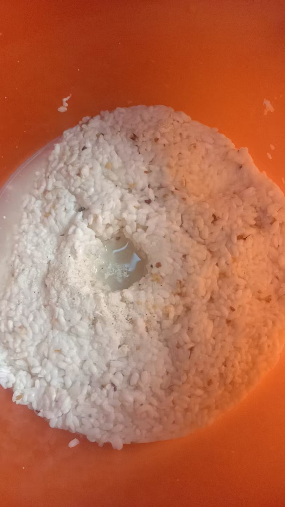
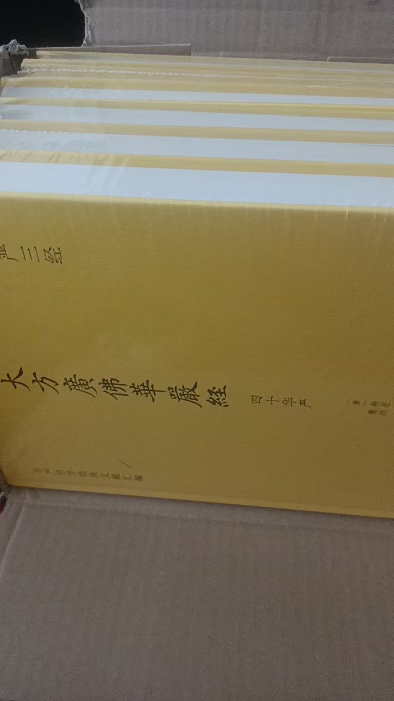
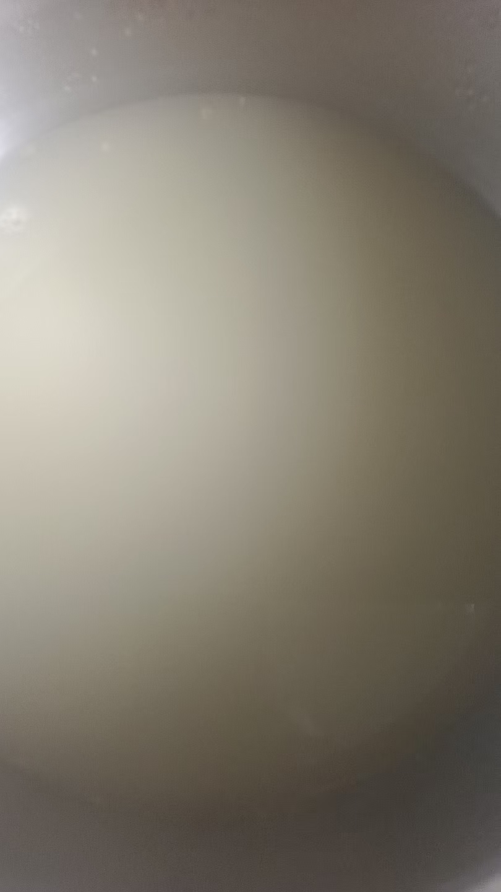

20260713米酒
奇门遁甲 原始对话记录前几天，带回家的米酒都说好喝
这是第四天
加了桂花
这两天，再去买两个大水桶，多做点，
问了一下，山东明令禁止
不准做白酒，不准做米酒
但自己做来喝不管
山东最严
小作坊证，根本拿不下来
自己喝或送亲戚，没人管
就是这小区里，隔几天拉一车来，也没商标，二十元十斤，也没人查
[呲牙][呲牙]华严经是不是飞来的
11号下的单，刚才看了一下，说滞留一天，也就是说昨天已经到了
12号
台风不经过潍坊了
不过雨还是要下一点点的
这边山高，台风极少过来
台风巴威也没有到厦门
这个视频可以随时看
所以，这旧手机舍不得扔
以前收藏的，现在都放不了
这老手机还能播放
口袋很浅，昨天上午去超市，回来这手机丢了
就用新手机问元宝，用奇门遁甲看看手机什么时候找到
元宝解答下午两点能找到
结果，连续打这个号码，最后打通了，物业说，两点半去物业拿手机
米酒灭活
八十度，二十分钟

米糖化不完全
再加曲，二次发酵
[呲牙][呲牙]
熟能生巧
就像治病一样，以前，还要见到病人，做法供奉
现在，来也麻烦，直接说几句，好了
甚至有人怀疑，为什么几句话就好了，是不是得病也跟他有关
成了妖道了
什么人也有
所以，不到关键时候，不是有缘人，坚决不会
啥也不会

也不多，六本
米酒糖化发酵好了，剩下很少米，这些米还可以保存起来，多了加白酒曲，继续发酵，蒸白酒

味道太好了
甜中微酸，略带酒香
米酒手记：桂花米酒的做法与"熟能生巧"
一、本页是什么
本页是一段做米酒的日常记录，图文与短视频混排：从"前几天带回家的米酒都说好喝"说起，记下第几天加桂花、打算买桶多做，又插叙了一段手机失而复得的小事。既讲做法，也讲心情。
二、桂花米酒做到了第几天
原文给了明确的时间线，可以整理成一张进度表：
| 时间点 | 状态 |
|---|---|
| 前几天 | 带回家的米酒，大家都说好喝 |
| 第四天 | 加了桂花 |
记录者打算"再去买两个大水桶，多做点"，说明这批口味过关，想扩大产量。这正对应标题那句——熟能生巧。
三、关于自酿的管理口径
本页提到一个现实问题：自酿白酒、米酒的管理。原文转述的本地说法大意是——对做白酒、米酒有明确限制，自己做来喝、送亲戚不管，但小作坊式的证照不易办下来；小区里偶尔有拉车来卖的散酒，也无商标。
这里如实转述记录者的说法，各地口径不同、也在变化，具体以当地现行规定为准。
四、"糖化不完全，就加曲再发"
做法上，本页留下两条经验：
- 糖化不完全：就再加曲、二次发酵，把剩下的米继续转糖；
- 灭活：八十度、二十分钟，用来停止发酵、便于保存。
记录里还说，剩下的米不多时，"多了加白酒曲，继续发酵"还能蒸馏出白酒。收尾形容成品味道："甜中微酸，略带酒香"。
五、常见问题
问：第四天加桂花算早还是晚？ 原文只记"第四天加了桂花"，没有统一标准。何时加香，看个人口味与发酵进度（详见《米酒二次发酵与灭菌》）。
问：手机丢了真能用奇门找回来吗？ 本页记下了"用奇门看、下午两点能找到"的一段。这属于个人记录，本站不作效果承诺，寻物首选报警与物业协助。
问：自己做的米酒能常喝吗？ 控制好糖分与卫生即可作为家常饮品；含酒精，孕妇、儿童、服药者请谨慎。
六、提醒
- 本页是生活手记，酿制请严控卫生与温度；
- 自酿涉酒，遵守当地法规，不用于对外销售；
- "奇门寻物""熟能生巧"等表述按个人记录看待，理性对待。